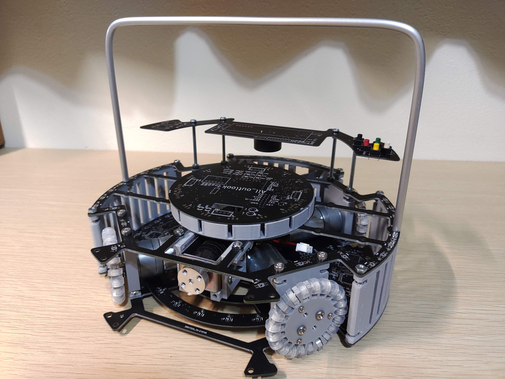
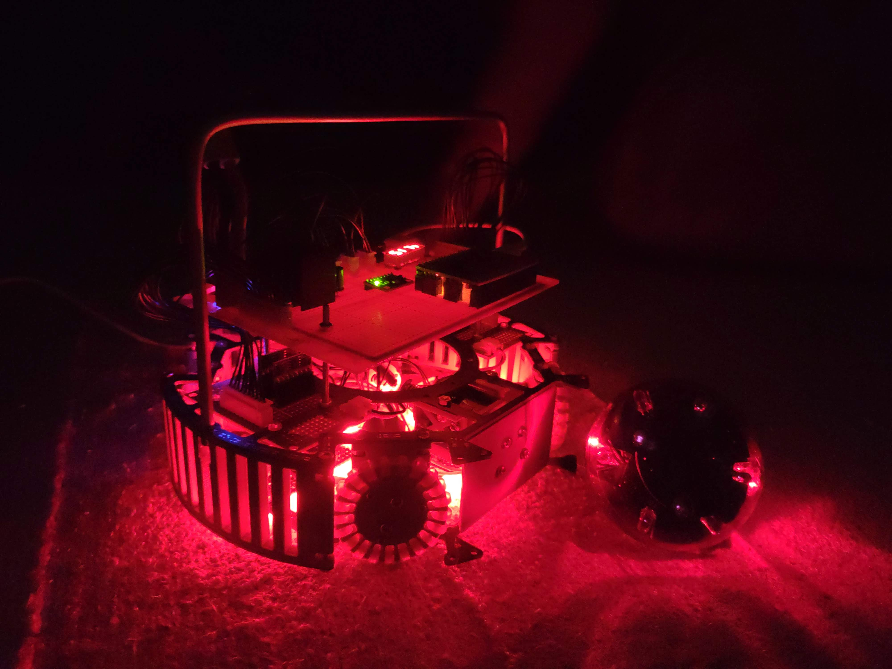
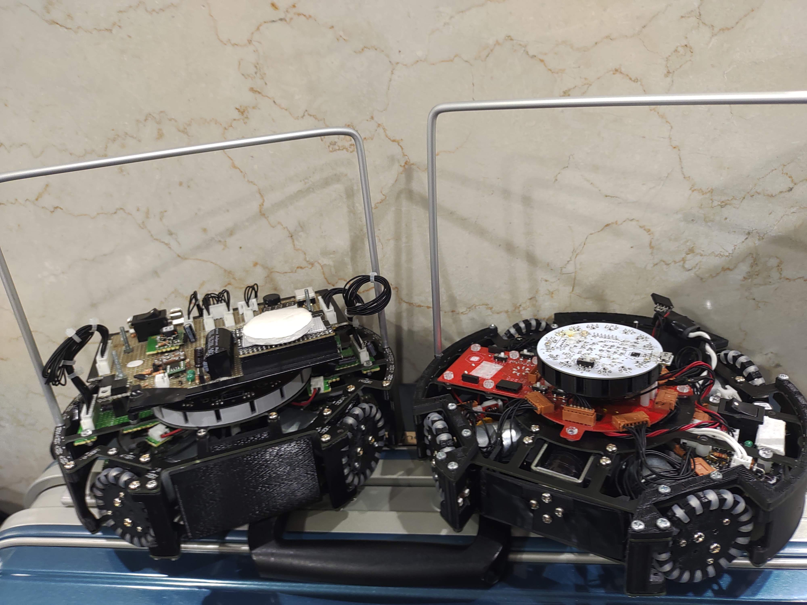
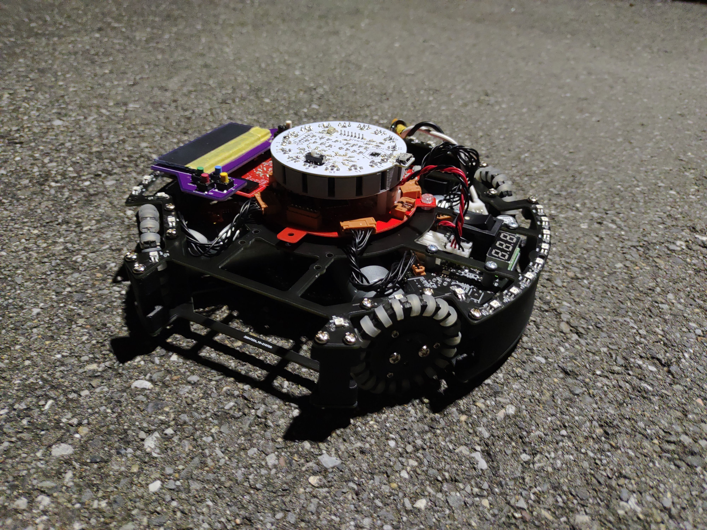
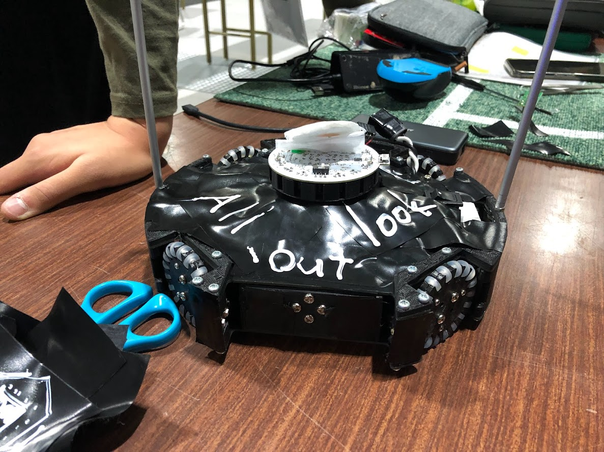
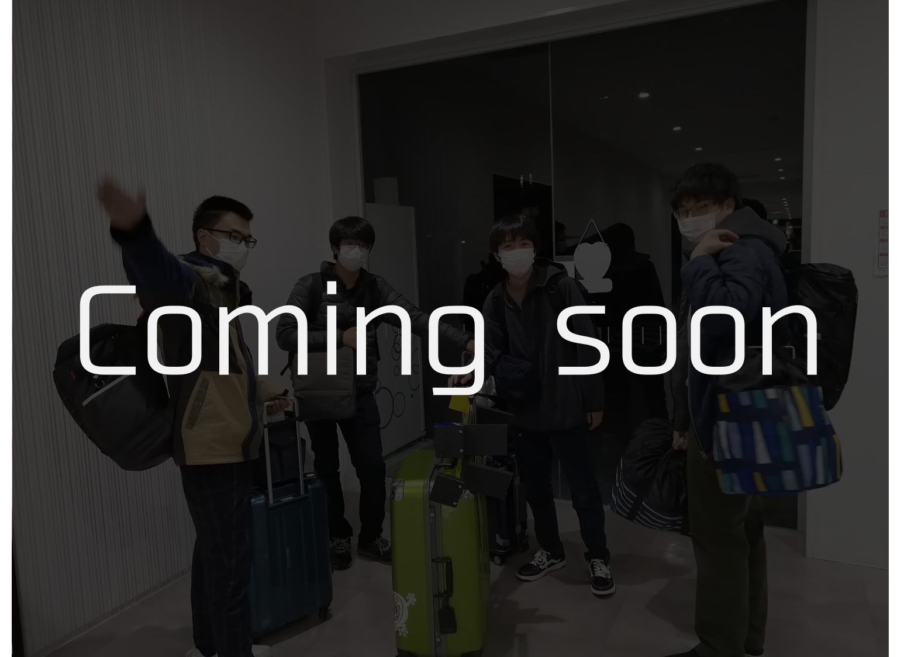

AlokV1
AlokV1.0
2021/08完成
大会：未出場
実験して使えることを確認していない部品などを多く搭載してしまったことで動かせなかった… Atmega32U4どうやったら動かせんだろ。
AlokV1.1
2021/08完成
大会：Nestロボコン2021、千葉ノード2022
V1.0の回路がダメダメだったのでユニバーサル基板で最低構成で回路を作り直した。 初めてまともに動いたロボット。
AlokV1.2(写真左)
2021/11完成
大会：AsiaPacific2021 Aichi Japan
AsiaPacific2021でビニテを貼って車検を無理やり通そうとしたため、 重くなってしまい、車高をギリギリまで低くして軽くした。
3Dプリンターを持っていっていて本当に良かった。会場に持ってたのはあんまり良くなかったかな。。。
AlokV2
AlokV2.0
2021/11完成
大会：未出場
千葉ノード出場のため、V1からフレーム以外、全て作り直した。 マイコンを9台載せてSPIで通信させようとしていたがうまくいかなかった。
基板の色は、ルーレットで決めた()
AlokV2.1
2021/11完成
大会：AsiaPacific2021 Aichi Japan
通信方式をUARTに変更して無理やり動かした。 AsiaPacificで自発光禁止だったためビニテを貼った。
AlokV2.2
2021/12完成予定
大会：関東ブロック2022(予定)
AsiaPacificでわかった、スピードが遅い、キッカーが弱いという問題を解消するために 一部基板を作り直す予定。
プログラムは新たなアルゴリズムを多数実装予定。 特に、オムニのPID制御とIRのベクトル合成はしっかりできるようにしていきたい。